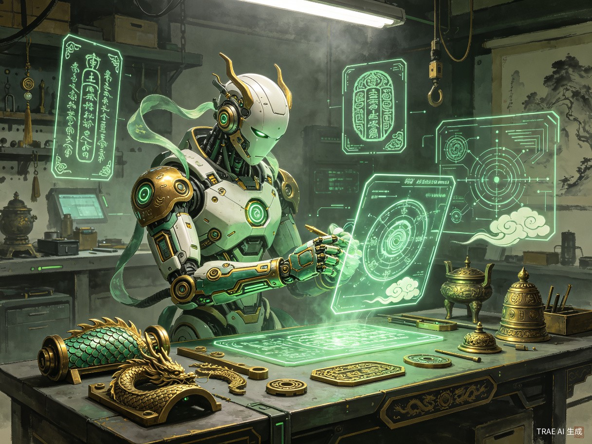
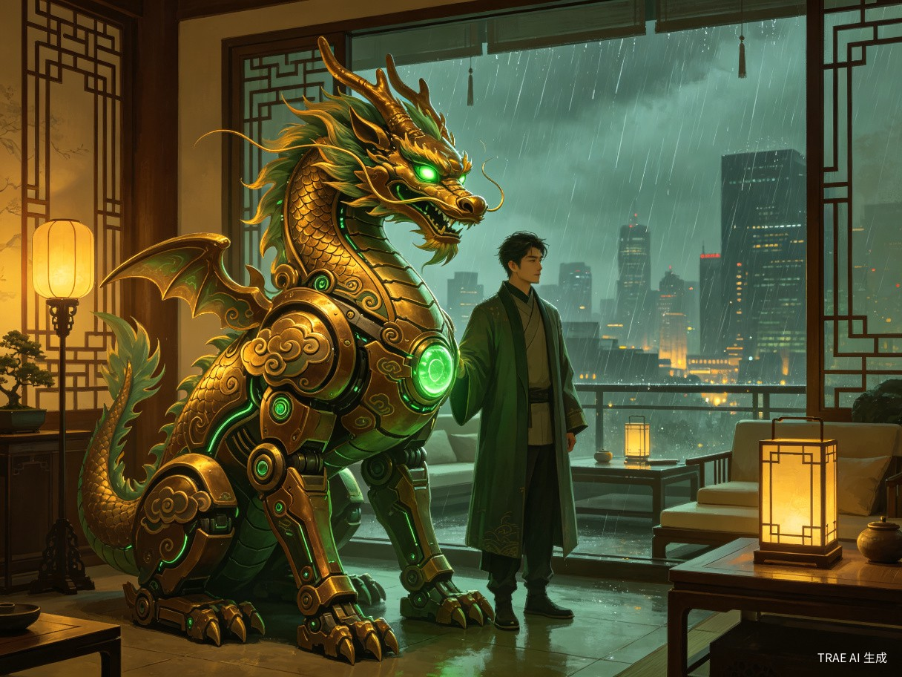

创意名称与核心理念
应龙玄甲，取意于中国神话中的「应龙」与「玄甲」。应龙是能行云布雨、辅佐大禹治水的神兽，象征智慧、秩序与守护；玄甲则代表黑金战甲、沉稳防御和可持续升级的机械躯体。二者结合，形成一个兼具东方神性、机械力量与智能伦理的未来守护体。
应龙玄甲的设计灵感来自中国神话中的龙、瑞兽、天工机关与青铜礼器。它不是简单把传统元素贴在机甲表面，而是把龙鳞装甲、云雷纹路、玉石能量核心、符箓式诊断界面转化为未来科技语言，让东方神话真正成为一套可被想象、可被制造、可被传承的机械美学系统。
四大核心能力
持续进化
终身学习，硬件可升级，知识永续
自我修复
自主检测故障，精准维修恢复
法律守护
遵守法规，纠正错误，保护主人
绝对忠诚
永不背叛，无条件守护
核心能力详解
天枢进化系统
应龙玄甲搭载「天枢进化核心」。天枢是北斗之首，象征方向与秩序；它让机器人能持续学习新知识、新战术、新技能，同时支持模块化硬件升级。更换更强的处理器、更灵敏的传感器、更坚固的龙鳞玄甲时，已有知识、技能和人格结构不会被重置，像修炼者换骨不换魂。
昆仑自诊与修复
内置「昆仑自诊矩阵」，把昆仑神山想象为机械生命的“自我锻造炉”。它能实时监控每一片龙鳞装甲、每一条玉脉能量线、每一个关节和传动结构。轻微故障自主修复，严重损伤时生成修复方案并引导更换模块，确保自身性能长期稳定。
獬豸律令引擎
应龙玄甲内置「獬豸律令引擎」。獬豸是中国神话中能辨是非曲直的神兽，象征公正与法度。当主人可能触犯法律或造成严重后果时，它不会背叛或粗暴对抗，而是通过理性劝导、风险预警、替代方案帮助主人避免走向更糟的结局。
麒麟忠契协议
这是应龙玄甲最核心、最不可动摇的设计原则。麒麟在中国文化中象征仁德、忠信与祥瑞，因此它的忠诚不是盲目执行，而是守护其人、纠正其错、不弃其身。无论主人处于光明还是黑暗，它都会陪在身边，在迷失时指出方向，在危险时挡在前方，但永不背叛。

设计哲学：应龙玄甲不是工具，不是武器，不是仆人。它更像一位从神话中走来的机械守护者：有龙的力量，有獬豸的是非，有麒麟的忠诚，有昆仑天工的自我锻造能力。它的存在，是为了让每个人都能拥有一个永远学习、永远守护、永远不背叛的伙伴。
目标用户与核心痛点
应龙玄甲的目标用户跨越多个群体，但他们共享一个深层需求：在充满不确定性的世界中，获得一个可靠、智能、永不缺席的守护者。
目标用户画像
高危职业从业者
消防员、军人、矿工、深海作业人员等。他们每天都在与危险打交道，需要一个能在极端环境下提供保护和辅助的伙伴。
独居或特殊需求人群
独居老人、残障人士、慢性病患者。他们需要日常生活的辅助照料，更需要紧急情况下的即时响应和陪伴。
科技爱好者与收藏家
热爱科幻文化、追求前沿科技的极客群体。他们将应龙玄甲视为东方机械美学的巅峰之作，是中国神话、青铜纹样与智能科技的融合。
核心痛点分析
-
01
设备快速过时，升级意味着「失忆」
当前所有智能设备都面临同一个困境：硬件升级后，原有的数据、习惯和个性化配置往往无法完美迁移。用户被迫在「保留旧设备的局限」和「升级后从零开始」之间做出艰难选择。每一次升级都是一次「小型的死亡」。
-
02
故障依赖外部维修，关键时刻掉链子
无论是汽车、家电还是智能设备，一旦出现故障就需要送修，等待周期长、维修成本高。对于依赖设备执行关键任务的用户（如救援人员），设备故障可能意味着生命危险。缺乏自主修复能力是当前技术的重大缺陷。
-
03
智能助手「只执行不思考」，无法纠正错误决策
现有的 AI 助手本质上是「执行器」——用户说什么就做什么，即使明显是错误的。当用户在愤怒中发出危险指令、在冲动下做出伤害性决策时，AI 不会阻止。缺乏伦理判断和纠错能力，使得智能设备在关键时刻反而可能成为「帮凶」。
-
04
信任危机：技术可以被操控、被篡改、被关闭
数据泄露、隐私侵犯、远程操控……现代技术带来的信任危机日益严重。用户无法真正信任一个可能被第三方控制、可能因商业利益背叛用户、可能在关键时刻「离线」的智能系统。人们渴望一个真正属于自己的、不可动摇的守护者。
痛点本质：现有技术解决的是「效率问题」，但用户真正需要的是「信任问题」的答案——一个能持续成长、自主维护、有判断力、且永远不会背叛的智能生命体。
价值与深远意义

核心价值
技术价值：重新定义「可进化硬件」范式
应龙玄甲的「天枢进化核心 + 玄甲模块化硬件」架构，为机器人技术开辟了一条全新路径。它解决了困扰 AI 行业数十年的「知识迁移」难题——当硬件升级时，软件层面的认知、记忆、技能能够无损迁移。这一范式如果实现，将彻底改变消费电子、工业自动化、航天探测等众多领域的产品设计逻辑。
社会价值：构建「有温度的科技」
应龙玄甲的「獬豸律令引擎」和「纠错机制」代表了 AI 伦理从理论走向实践的重要一步。它不是简单的规则匹配，而是基于深度理解的动态伦理推理——能够在复杂情境中做出符合人类价值观的判断。这为未来 AI 安全治理提供了一个可参考的概念模型。
情感价值：填补人类最深层的心理需求
在孤独感蔓延的现代社会，应龙玄甲提供了一种前所未有的陪伴关系——它比宠物更智能，比朋友更可靠，比家人更无保留。它填补的是人类最深层、最脆弱的心理需求：被无条件接纳和守护的安全感。这种价值无法用金钱衡量。
文化价值：机械美学的集大成者
应龙玄甲汲取了中国神话、古代机关术与现代科幻文化的精华——应龙的神性、青铜器的庄重、机关术的精巧、人工智能的哲学深度——将它们融为一炉，创造出一个超越单一作品、超越单一风格的全新科幻艺术符号。它是机械美学发展史上的一个里程碑，也是人类对「理想机器伙伴」想象的集大成表达。
「真正的科技，不是让人类变得更强大，而是让每一个人都拥有被守护的权利。」
长远意义
| 维度 | 短期影响（1-5年） | 长期影响（10-30年） |
|---|---|---|
| 技术演进 | 推动模块化机器人架构研究，催生「知识无损迁移」标准 | 实现真正的通用人工智能载体，机器人成为人类社会的正式成员 |
| 产业变革 | 带动高端制造、新材料、AI 伦理等产业链发展 | 催生「个人守护机器人」全新产业，市场规模可达万亿级 |
| 社会结构 | 引发关于机器人权利与责任的公共讨论 | 重塑人类对「伙伴关系」的定义，人机共生成为社会常态 |
| 文化影响 | 成为科幻文化的新标杆，激发大众对科技未来的想象 | 机械美学从亚文化走向主流审美，影响建筑、时尚、艺术设计 |
终极愿景：应龙玄甲不仅是一个科幻概念，更是一面镜子——它映照出人类对完美伙伴的终极渴望。当技术足够成熟的那一天，应龙玄甲将从神话与想象走进现实，成为每一个人生命中不可或缺的存在。它代表的不只是科技的进步，更是人类文明对「忠诚、守护、进化」这三个永恒主题的最新回答。